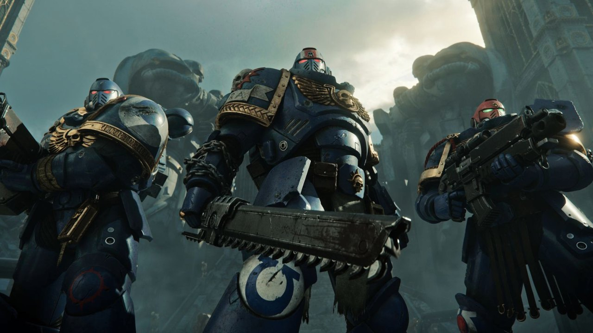

Los Ultramarines
Los Ultramarines fueron la XIII Legión de Marines Espaciales creada por el Emperador para su Gran Cruzada. Su Primarca era Roboute Guilliman. La Legión se mantuvo en el bando leal durante la Herejía de Horus, y tras esta, se reorganizó según el Codex Astartes y se dividió en Capítulos.
Desde los antiguos días de la Gran Cruzada, los Ultramarines han combatido en la vanguardia de los ejércitos del Emperador. Son guerreros altamente disciplinados y valientes que han permanecido fieles durante diez mil años a las enseñanzas del sagrado Codex Astartes, la mayor obra de su Primarca. Sus victorias se relatan desde su mundo natal, Macragge, hasta en las cámaras sagradas de Terra. Donde los enemigos de la Humanidad amenacen al Imperio, allí estarán los Ultramarines para combatirlos.

La llegada de Roboute Guilliman fue un buen augurio para la gente de Macragge. Los escribas grabaron muchos acontecimientos extraños y un pasaje en el diario de Konor ofrece una pista significativa respecto al misterio que rodea a los Primarcas de los Marines Espaciales. Estos escritos han sido preservados por los Bibliotecarios de los Ultramarines y su palabra ha iluminado y dividido a los historiadores imperiales en igual medida.